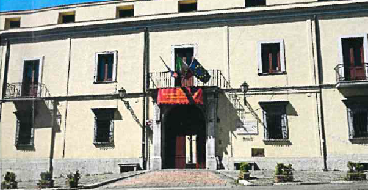
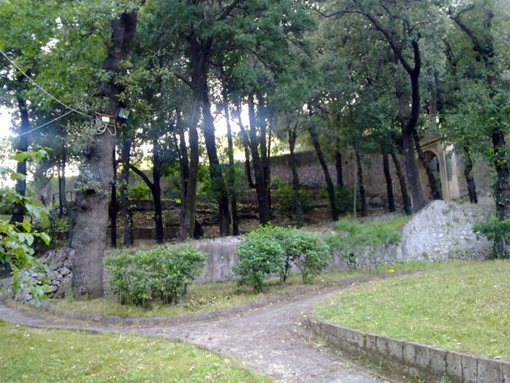
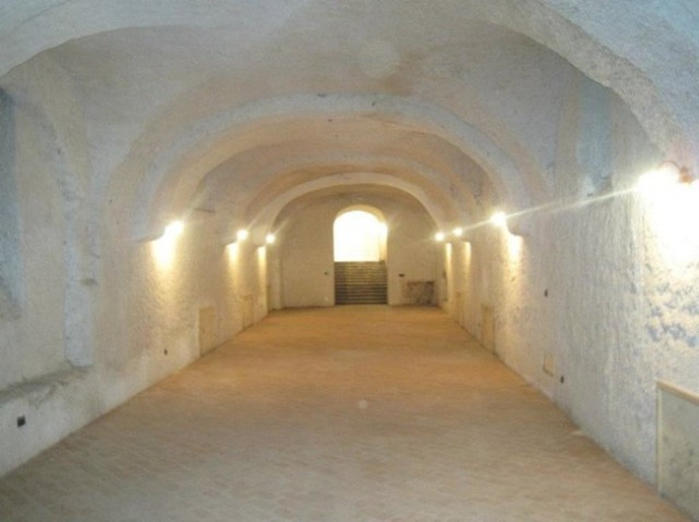
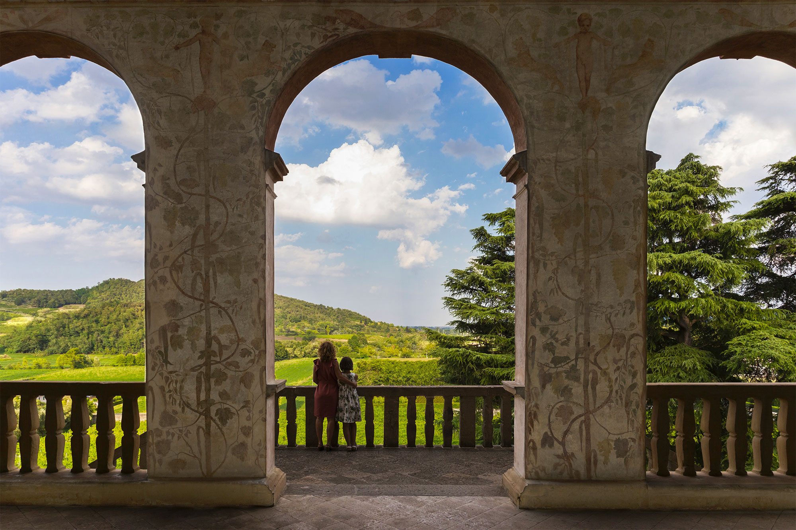

📍 Comune Castel San Giorgio
📅 Epoca XVIII Secolo
🏛️ Tipologia Villa Nobiliare / Monumento
⭐ Carattere Culturale
Descrizione Storica
Villa Calvanese è una delle più importanti residenze nobiliari dell'Agro Nocerino-Sarnese. Situata nella frazione Lanzara di Castel San Giorgio, rappresenta un mirabile esempio di architettura settecentesca.
Oggi la villa è un vivace centro culturale, sede di importanti manifestazioni enogastronomiche, mostre d'arte e convegni, fungendo da punto di riferimento per l'intero territorio.
📸 Galleria




ℹ️ Info Pratiche
Ubicazione: Frazione Lanzara, Castel San Giorgio.
Caratteristiche: Architettura settecentesca, giardini storici, eventi culturali.